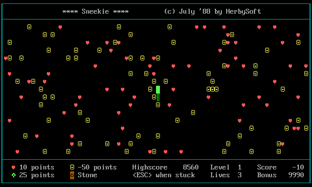
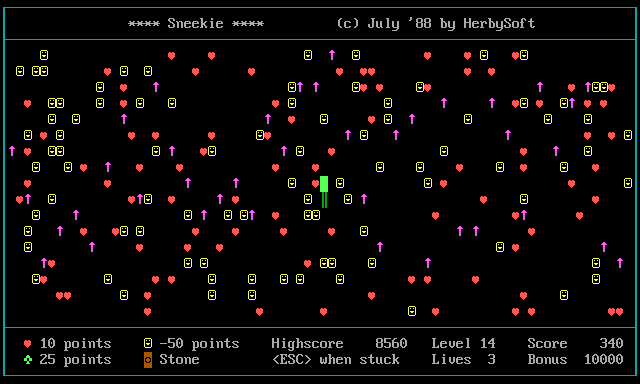
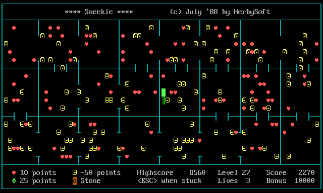

Watch it play itself
The 1988 game has no computer player — so we wrote a bot and let it loose, then captured the screen live. It paths to the nearest ♥ heart, only steps on a ☺ smiley when a heart is otherwise walled off, pushes ◙ stones out of the way, dodges the ↑←→ arrows, and keeps a route back to its own tail so it never boxes itself in. These clips are bigger and run far longer than the thumbnails in the manual — hundreds of moves each.

Eat everything
On the open level the bot clears the entire board — over 400 moves, threading its own ever-growing tail and stepping around every ☺ −50 smiley, until the only things left on screen are the smileys it refused to touch.

Thread the swarm
A field of ↑ arrows marches upward a step at a time — touch one and you're dead. The bot reads where each arrow will be next tick and never moves into its path, collecting hearts the whole way.

Time the crossings
Here the ←→ arrows slide left and right across every row. Six hundred moves of picking gaps between them — about as long as a run gets before the board is nearly bare.
Captured by driving the real game in
a browser: the bot reads the playfield straight out of screen memory (peek), and each frame is
rebuilt from that memory and saved — so what you see is pixel-for-pixel the 1988 renderer, just played by a machine.